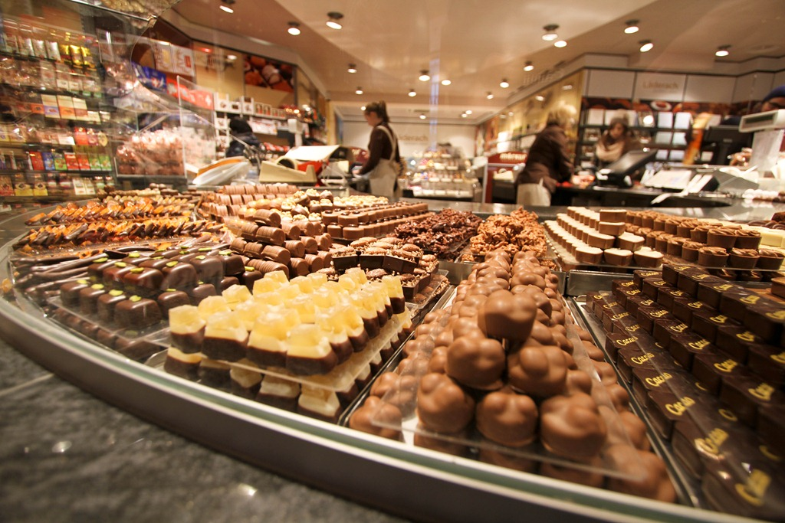
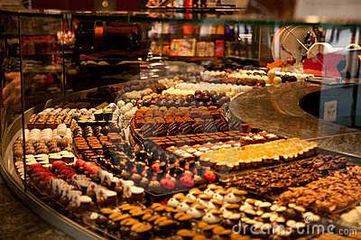

Bertha's Deluxe Chocolates
Bertha's Deluxe Chocolates
Our Story
American-made delicious since 1921


Bertha's has been making quality chocolate and candy Bertha's way for over 90 years. From the beginning, Bertha took pride in her recipes and insisted on only the finest, freshest ingredients. Today, we're still just as committed to making candy the right way.
Bertha's has expanded from one chocolate shop to over 200 shops across America and a flourishing online store. And though we continue to grow, our commitment to tradition, taste, service and quality never wavers.
Stop into one of our iconic black-and-white shops inspired by Bertha's kitchen, or visit us online. You'll find over 100 varieties of delicious chocolates, and seasonal gifts made with the same motto in mind: quality without compromise